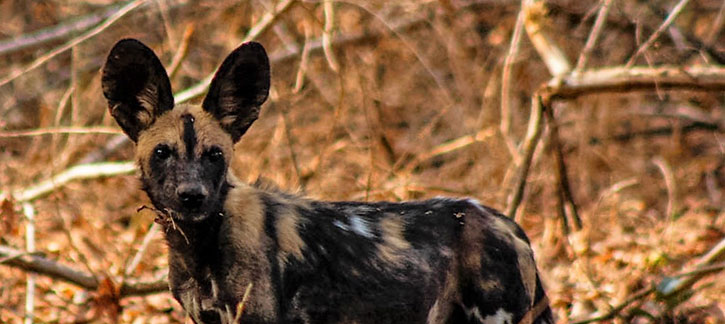
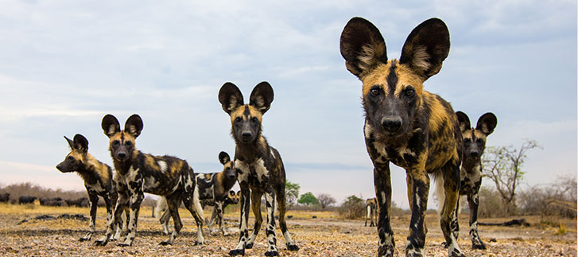

Like this review?
Go on, give it a kudu!


South Luangwa, Zambia is home to many wonderful animals. Lions, leopards, giraffe, zebra and hyena are just a few of the animals you’re likely to see on safari. But, a big draw for me, and for many guests of South Luangwa, is the African wild dog, which I'll refer to as just 'wild dog' for the remainder of this piece. I was particularly keen to see a wild dog, as this was one animal I’d not yet had the pleasure of seeing or photographing on safari.
My safari in South Luangwa was off to an auspicious start, with the sighting of three separate leopards—my favorite animal! I was overjoyed with the good fortune of being able to get such lovely shots—one was right around sunset. It was until I arrived at Nsefu and heard people discussing their morning’s sightings, that I remembered the wild dog. Two separate travelers in two separate vehicles spotted a pack of around 18 wild dogs that day. I couldn’t believe my ears!
Alpha male, wild dogs of South Luangwa
That afternoon, I had wild dog on the brain. My guide looked concerned. Wild dogs move quickly and they had already passed through this area today. He was dubious they would be around this eve. I told him to take me to where they’d see so many that morning. We took off at a clip as it was quite a distance away. As we headed out, the sky quickly darkened and ominous, purple clouds came over the horizon. I learned something very valuable on this safari: be open minded and live for the moment. The imminent storm cast some eerie hues on the plains and there were some incredible photo opps to be had. I made the poor decision of telling him to drive on in search of the wild dog. Not only did we miss a stellar sunset, but we saw no dogs that night.
The next morning, I told my driver that I wanted to take it all in, dogs or no dogs. Although I think he only partially believed me, he did look more relaxed on our drive. I stopped several times to get sunset and various herbivore shots. At one point, we stopped and looked a mutilated antelope carcass. “Only wild dogs would leave so much meat,” mused my guide. He looked for broken branches, trampled grass, any sign to help spot where they’d gone. If you're truly after some spectacular animal spotting, you have to be prepared to stop frequently and look for clues.
Our detective work paid off: Not ten minutes later and we came across the fat, lazy pack of them. They were so full they couldn’t even be bothered to stand up when nature calls. I’d never seen an animal pee while sleeping before. Their pungent scent is what really surprised me. At first I thought it might be a rotting carcass somewhere and I scanned the area for any signs of a kill. My guide saw me doing this and told me it was indeed the dogs’ musky scent I was inhaling.
Wild dogs aren't the easiest subject to photograph: they're constantly on the move and they move surprisingly fast. In fact, wild dogs will hunt together in packs and often will chase their prey until it tires. If you're after an action shot of a wild dog, you'll want to be sure your drive positions you ahead of their direction of movement. This way, you'll have an opportunity to get them on the approach and as they move away. Wild dogs are not solitary creatures and hunt in packs. A pack of 20 wild dogs was spotted in South Luangwa, which also means you've several options for subject matter.
Alpha male, wild dogs of South Luangwa
Jennifer of Your African Safari
*https://www.eriezoo.org/PDFS/Animal%20Fact%20Sheets%20for%20Website/African%20Wild%20Dog.pdfSign in using your facebook account

Or sign in below


123 Comments
Patrick Hughes Said: 4 hours ago
Located in the heart of central Mozambique, covering over 4,000 km2 (1544 m2), Gorongosa National park lies at the southern end of the Great African Rift Valley. The valley is made up of a variety of different soil types, and frequent fl...
Landon Mullins Said: 4 hours ago
Located in the heart of central Mozambique, covering over 4,000 km2 (1544 m2), Gorongosa National park lies at the southern end of the Great African Rift Valley. The valley is made up of a variety of different soil types, and frequent fl...